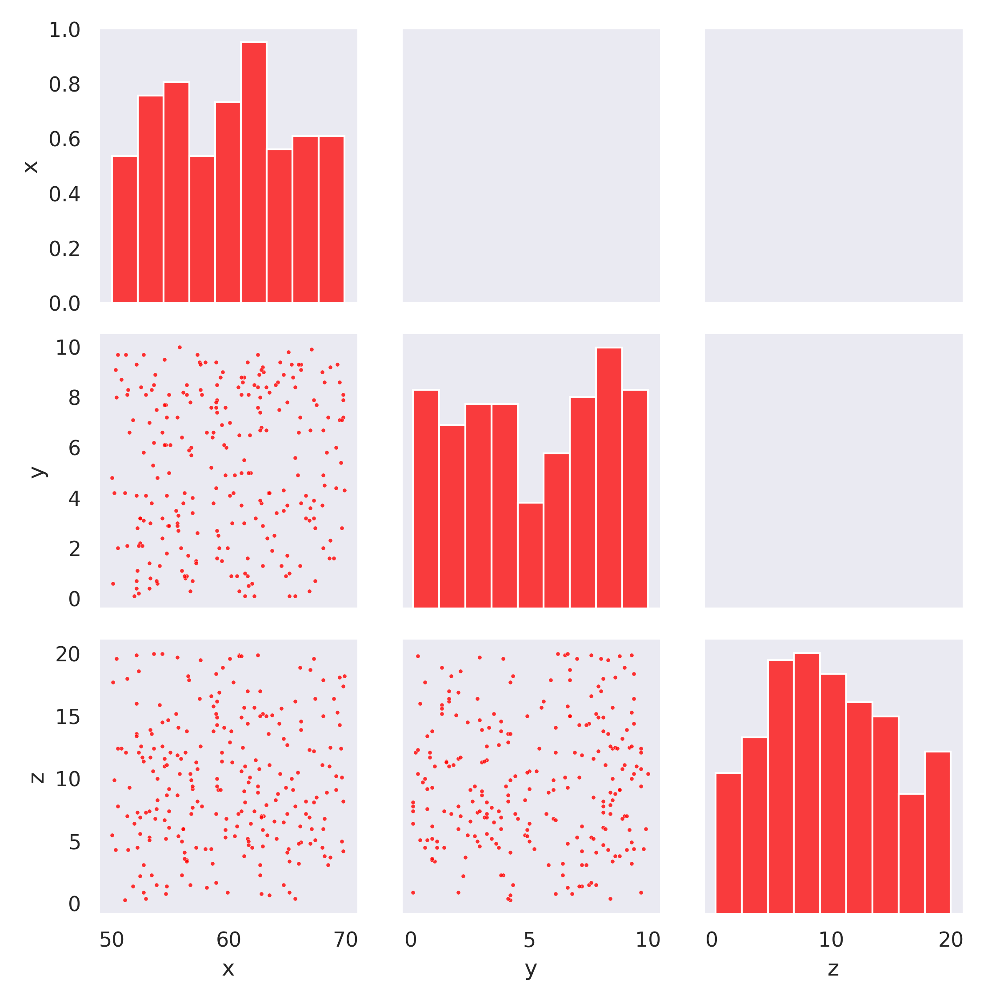
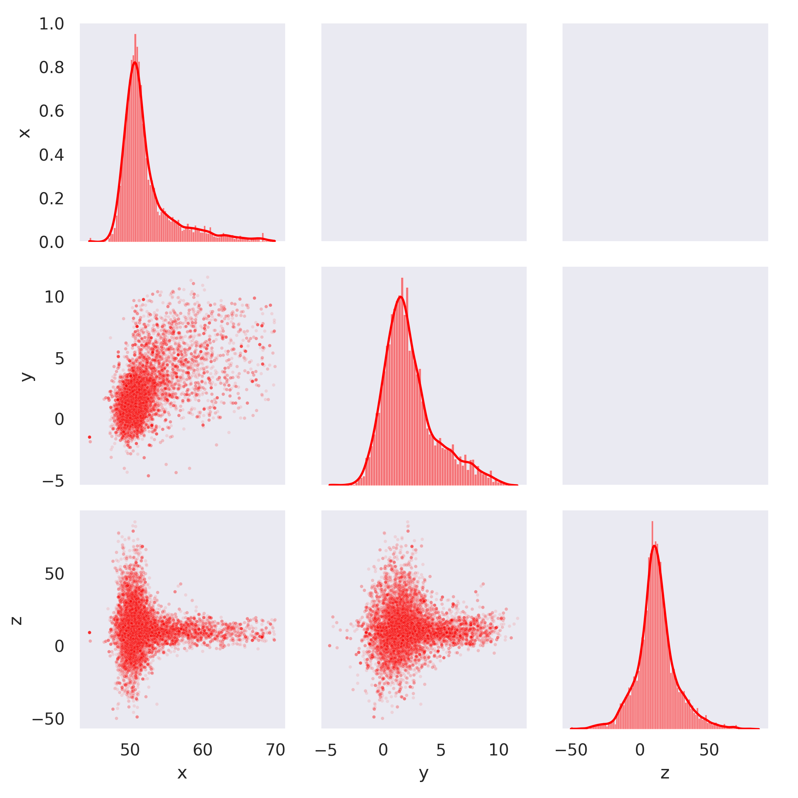

Affine Invariant Markov chain Monte Carlo (MCMC) Ensemble sampler
mchaves@ifi.unicamp.br
On this page, I exemplify the use of the MCMC using the package I create using C++. I will try to do that by explaining the method and the package togheter. This package is based on the emcee, written in python.
Basics
Compiling and usage
In order to use the MCMC, you should compile the program using the make command in the gnu terminal.
Once you have compiled the program, you are able to use it in any program.
To user the MCMC sampling in another program you should use the flag -lnu. Inside the program you should refer to the location of the file using #include "(the path goes here)/nu.h".
Understanding the MCMC
The MCMC sampling is an algorithm that has as goal sampling some probability distribution \(p(\vec{x})\), where \(\vec{x}\) is an N-dimensional vector. The advantage of using affine invariant MCMC is that you don't need to have a prior acknowledgement of the distribution for all the variables.
There are three main rules when running MCMC:
Choose your initial guess;
Ensure convergence;
Get as many samples as you need;
In the algorithm, we consider two elements: walkers and ensembles of walkers. A walker is a vector in the N-dimensional space that stores one sampling story. An ensemble is a set of walkers.
In the beginning, you choose an ensemble of walkers with randomly organized initial positions.
where \(c_0=50\), \(c_0=1\), \(c_0=20\), \(\sigma_0=1\), \(\sigma_1=1\) and \(\sigma_2=20\).
Sampling
The initial guess
The following code can be used to generate the initial guess in the file guess.csv.
The code
The C++ code:
/*INITIAL GUESS*/
std::vector< std::vector<double> > init_pos;
for(int k = 0; k < nwalkers; k++){
double p1 = double(rand()% 200+500)/10;
double p2 = double(rand()% 100+1)/10;
double p3 = double(rand()% 200+1)/10;
std::vector<double> pos{p1,p2,p3};
init_pos.push_back(pos);
}
...
nu::Mcmc my_sample(nwalkers, ndim, init_pos); /*CREACTE THE ENSEMBLE*/
my_sample.save_state(file_name); /*SAVE THE PRESENT STATE OF THE ENSEMBLE*/
...
For the last code, if we assume \(250\) walkers we the results that are scattered on Fig. 1, and has can you see the points are scatterd uniformly around the chosen region.

Fig.1 - Scattered initial guess.
Running
In order to get more points, we need to use the run method using more steps, for the fig. 2 we use 50 steps. We also emphasise that the function that should be passed to the method run, is \(-\frac{1}{2}\log(p) \).
The save_chain_walker method saves the history of the walkers as a csv file whih the last column is the walker identifier given by an integer going from 1 to the number of walkers. In fig 2. we show the result of the output.

Fig.2 - Scattered history of the walkers.
In figure 2 you can see that we still have the history of the walkers in the path from our initial guess to the exact distribution. To solve that we need to insure convergence, this is the next topic.